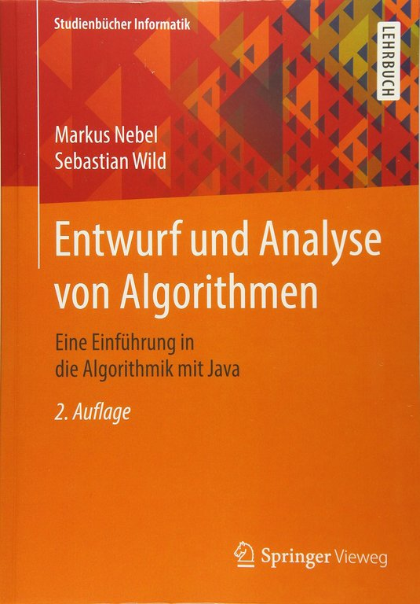
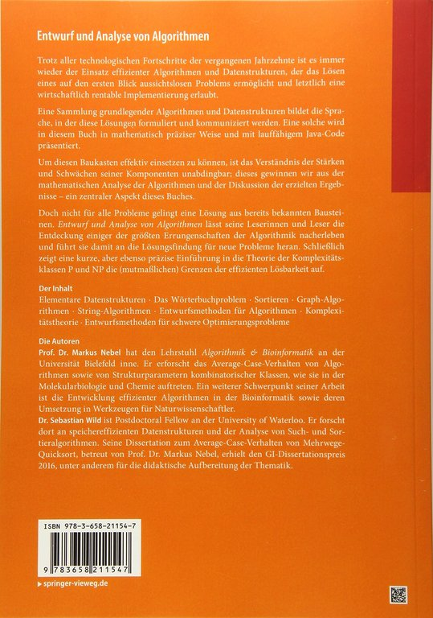

Entwurf und Analyse von Algorithmen
Marburg university library: ebook ⋅ print
This is the second edition of our algorithms textbook (in German). While many good textbooks are available, ours has a few qualities that seem unique enough to justify “yet another textbook on algorithms”:
- rigorous mathematical definitions of all problems and notions
- a focus on precise analysis of algorithms
- complete, runnable Java code using features of modern Java (lambdas, generics, default methods in interfaces), in particular to represent abstract data types
- ties to real-world implementations in standard libraries (how are the discussed algorithms and data structures called, what design decision are taken there)
{kind=link}

{kind=link}

My personal highlights
The chapter on design strategies features a very structured introduction to dynamic programming that I like a lot, including detailed code of intermediate stages like the memoized recurrence before it is converted to bottom-up table-filling code. (Erik Demaine’s explanation in “Introduction to Algorithms” is similar in spirit.)
Another one of my personal highlights is the fully spelled out proof of Cook’s Theorem. This requires to fix a specific model of computation, which many authors try to avoid. We use nondeterministic Turing-machines for that, and also prove their equivalence to the more widely taught verifier-based definition.
Ours might not be the most easily digestible introduction to P and NP, but it allows students to look inside the black box of the NP-completeness of SAT.
Adoption
The first edition of the book has served as main reference for the eponymous course at TU Kaiserslautern for many years and is now also used at Universität Bielefeld. I am using the book in my course in Marburg.